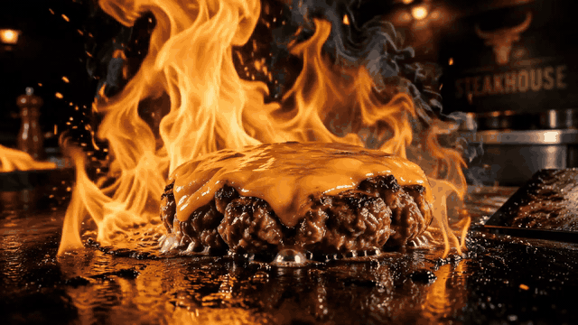

🔥 Campo Grande · MS
Feito na chapa, no fogo e no capricho. Hambúrguer artesanal de verdade.
Montado na hora
Nossa história
No Carandá Bosque, cada burger é prensado na chapa bem quente, ganha aquela crosta caramelizada e é montado na hora, camada por camada. Ingredientes selecionados, pão macio e molhos da casa.
Prévia do cardápio
“O melhor hambúrguer de Campo Grande. Suculento, bem servido e o atendimento é nota 10.”
Avaliação no GoogleR. Vitório Zeola, 2225 — Carandá Bosque, Campo Grande - MS
Todos os dias a partir das 18h30
(67) 98405-0104